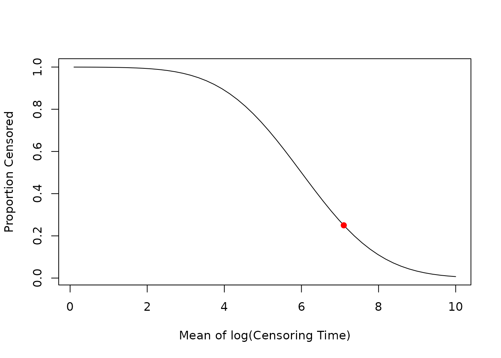
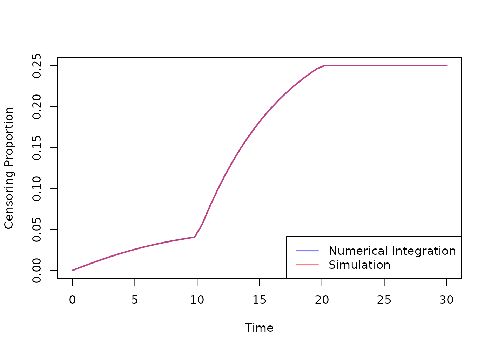

This vignette provides examples for common usage of functions in the
help(CensRCalc) package.
For each situation we need to define the event time distribution and the random censoring distribution. When calling the functions, we need to specify the survival function \(S_{T^*\mid\mathbf{X}}\) of the event time (conditional on the covariates, if there are any), the survival and density functions \(S_{C\mid\lambda_{C_{\text{rnd}}}}\) and \(f_{C\mid\lambda_{C_{\text{rnd}}}}\) of the censoring time and, if applicable, the joint density function \(f_\mathbf{X}\) and bounds of the covariates.
For each example, we want to achieve a expected 25% proportion of censoring.
Weibull with Exponential Censoring
The event time follows a Weibull distribution with shape parameter \(\alpha = 2\) and scale parameter \(\lambda_{T^*} = 10\), that is \[ T^*\sim \text{Weibull}(\alpha, \lambda_{T^*}). \]
The random censoring time follows an exponential distribution with rate parameter \(\lambda_{C_{rnd}}\), that is \[ C_{\text{rnd}}\sim \text{Exp}(\lambda_{C_{rnd}}) \] leading to \(S_{C_{\text{rnd}}}(t) = \exp(-\lambda_{C_{rnd}} t)\) and \(f_{C_{\text{rnd}}}(t) = \lambda_{C_{rnd}} \exp(-\lambda_{C_{rnd}} t)\).
The default of the package is to use exponential censoring, so we only need to specify the survival function of the event time.
The default bounds for the \(\lambda_{C_{rnd}}\) parameter are c and 10^{-5}.
lambda_evt <- 0.1
shape <- 2
event_surv <- \(t) 1 - pweibull(t, shape = shape, scale = 1 / lambda_evt)
lambda_c_50 <- find_cens_param(pc_target, event_surv)
lambda_c_50
#> $parameter
#> [1] 0.0338
#>
#> $cens_prop
#> [1] 0.2500012We can now simulate data.
n <- 10**6
event_times <- rweibull(n, shape = shape, scale = 1 / lambda_evt)
censoring_times <- rexp(n, rate = lambda_c_50$parameter)
observed_times <- pmin(event_times, censoring_times)
censoring_indicators <- as.integer(event_times <= censoring_times)
mean(censoring_indicators == 0)
#> [1] 0.249808Weibull with Exponential Censoring and Covariates
The event time follows a Weibull distribution with shape parameter \(\alpha = 2\) and scale parameter \(\lambda_{T^*} = 10*\exp(-0.5 * x1 + 0.3 * x2 * \text{trt} - 0.2 * \text{trt})\), that is \[ T^*\mid\mathbf{X}\sim \text{Weibull}(\alpha, \lambda_{T^*}). \]
The random censoring time follows an exponential distribution with rate parameter \(\lambda_{C_{rnd}}\), that is \[ C_{\text{rnd}}\sim\text{Exp}(\lambda_{C_{rnd}}). \]
We have three covariates: A standard normal covariate \(X_1\sim\text{N}(0,1)\), a uniform covariate \(X_2 \sim \text{U}(0,1)\) and a binary treatment indicator \(\text{trt}\sim\text{B}(0.5)\).
lambda_evt <- \(x1, x2, trt) 0.1 * exp((-0.5 * x1 + 0.3 * x2 * trt - 0.2 * trt))
cov_dens <- \(x1, x2, trt) dnorm(x1) * dunif(x2, 0, 1) * dbinom(trt, 1, 0.5)
# Note that we give the bounds for trt as a list,
# because it is a discrete variable.
cov_bounds <- list(
x1 = c(-Inf, Inf),
x2 = c(0, 1),
trt = list(0, 1)
)
shape <- 2
event_surv <- function(t, x1, x2, trt) {
1 - pweibull(t, shape = shape, scale = 1 / lambda_evt(x1, x2, trt))
}
# This will take a bit longer to compute
lambda_c_50 <- find_cens_param(pc_target, event_surv,
covariate_density = cov_dens,
covariate_bounds = cov_bounds
)
lambda_c_50
#> $parameter
#> [1] 0.03049219
#>
#> $cens_prop
#> [1] 0.25The warnings are caused by the numerical integration where the bounds \((-\infty, \infty)\) of covariate \(X_1\) are inserted. This does not affect the result.
We can now simulate data.
n <- 10**6
cov_data <- data.frame(
x1 = rnorm(n),
x2 = runif(n, 0, 1),
trt = rbinom(n, 1, 0.5)
)
event_times <- rweibull(
n,
shape = shape,
scale = 1 / lambda_evt(
cov_data$x1,
cov_data$x2,
cov_data$trt
)
)
censoring_times <- rexp(n, rate = lambda_c_50$parameter)
observed_times <- pmin(event_times, censoring_times)
censoring_indicators <- as.integer(event_times <= censoring_times)
mean(censoring_indicators == 0)
#> [1] 0.250179Lognormal with Lognormal Censoring
We first use CensRCalc::estimate_cens_prop() to see the
effect of different censoring parameters on the proportion of
censoring.
We have a lognormal distributed event time with parameters \(\mu_{T^*} = 6\) and \(\sigma_{T^*} = 1.1\), that is
\[ T^* \sim \text{LN}(\mu_{T^*}, \sigma_{T^*}) \leftrightarrow \ln(T^*) \sim \text{N}(\mu_{T^*}, \sigma_{T^*}). \]
Also the random censoring is lognormal distributed with fixed \(\sigma_C = 1.2\) and \(\mu_C = \lambda_C\) is the parameter of interest, that is \[ C \sim \text{LN}(\lambda_C, \sigma_C). \]
event_surv <- \(t) 1 - plnorm(t, meanlog = 6, sdlog = 1.1)
cens_sdlog <- 1.2
cens_surv <- \(t, mean) 1 - plnorm(t, meanlog = mean, sdlog = cens_sdlog)
cens_dens <- \(t, mean) dlnorm(t, meanlog = mean, sdlog = cens_sdlog)
bounds <- c(0.1, 10)
est_fun <- estimate_cens_prop(event_surv,
cens_survival = cens_surv,
cens_density = cens_dens,
target_bounds = bounds,
target = "mean"
)
x <- seq(bounds[1], bounds[2], length.out = 50)
y <- sapply(x, est_fun)
mean_c_50 <- find_cens_param(pc_target, event_surv,
cens_survival = cens_surv,
cens_density = cens_dens,
target = "mean",
target_bounds = bounds
)
plot(
x,
y,
type = "l",
xlab = "Mean of log(Censoring Time)",
ylab = "Proportion Censored"
)
points(mean_c_50$parameter, pc_target, col = "red", pch = 19)
We can now simulate data.
n <- 10**6
event_times <- rlnorm(n, meanlog = 6, sdlog = 1.1)
censoring_times <- rlnorm(n, meanlog = mean_c_50$parameter, sdlog = cens_sdlog)
observed_times <- pmin(event_times, censoring_times)
censoring_indicators <- as.integer(event_times <= censoring_times)
mean(censoring_indicators == 0)
#> [1] 0.250447Weibull with Exponential Censoring, Covariates, Administrative Censoring and Accrual
As in a previous example, the event time follows a Weibull distribution with shape parameter \(\alpha = 2\) and scale parameter \(\lambda_{T^*} = 10*\exp(-0.5 * x1 + 0.3 * x2 * \text{trt} - 0.2 * \text{trt})\), that is \[ T^*\mid\mathbf{X}\sim \text{Weibull}(\alpha, \lambda_{T^*}). \]
The random censoring time follows an exponential distribution with rate parameter \(\lambda_{C_{rnd}}\), that is \[ C_{\text{rnd}}\sim \text{Exp}(\lambda_{C_{rnd}}) \] leading to \(S_{C_{\text{rnd}}}(t) = \exp(-\lambda_{C_{rnd}} t)\) and \(f_{C_{\text{rnd}}}(t) = \lambda_{C_{rnd}} \exp(-\lambda_{C_{rnd}} t)\).
We have three covariates: A standard normal covariate \(X_1\sim\text {N}(0,1)\), a uniform covariate \(X_2 \sim \text{U}(0,1)\) and a binary treatment indicator \(\text{trt}\sim\text{B}(0.5)\).
In addition, we have an accrual time of \(\tau_{\text{acc}} = 1\) and an administrative censoring time of \(\tau_{\text{adm}} = 3\), inducing the random administrative censoring variable \[ C_{\text{adm}}\sim \text{U}(2,3) \] with \(S_{C_{\text{adm}}}(t) = 3-t\) and \(f_{C_{\text{adm}}}(t) = 1\).
lambda_evt <- \(x1, x2, trt) 0.1 * exp((-0.5 * x1 + 0.3 * x2 * trt - 0.2 * trt))
cov_dens <- \(x1, x2, trt) dnorm(x1) * dunif(x2, 0, 1) * dbinom(trt, 1, 0.5)
# Note that we give the bounds for trt as a list,
# because it is a discrete variable.
cov_bounds <- list(
x1 = c(-Inf, Inf),
x2 = c(0, 1),
trt = list(0, 1)
)
shape <- 2
event_surv <- function(t, x1, x2, trt) {
1 - pweibull(t, shape = shape, scale = 1 / lambda_evt(x1, x2, trt))
}
time_acc <- 10
time_adm <- 20
lambda_c_50 <- find_cens_param(pc_target, event_surv,
covariate_density = cov_dens,
covariate_bounds = cov_bounds,
time_admin_cens = time_adm,
time_accrual = time_acc
)
lambda_c_50
#> $parameter
#> [1] 0.005809193
#>
#> $cens_prop
#> [1] 0.2499994The warnings are caused by the numerical integration where the bounds \((-\infty, \infty)\) of covariate \(X_1\) are inserted. This does not affect the result.
We can now simulate data.
n <- 10**6
cov_data <- data.frame(
x1 = rnorm(n),
x2 = runif(n, 0, 1),
trt = rbinom(n, 1, 0.5)
)
event_times <- rweibull(
n,
shape = shape,
scale = 1 / lambda_evt(
cov_data$x1,
cov_data$x2,
cov_data$trt
)
)
rnd_censoring_times <- rexp(n, rate = lambda_c_50$parameter)
adm_censoring_times <- runif(n, time_adm - time_acc, time_adm)
censoring_times <- pmin(rnd_censoring_times, adm_censoring_times)
observed_times <- pmin(event_times, censoring_times)
censoring_indicators <- as.integer(event_times <= censoring_times)
mean(censoring_indicators == 0)
#> [1] 0.249912Instead of the overall censoring proportion \(P(C < T^*)\), we can also evaluate the censoring proportion at a specific time point \(\tau\) \(P(C < \tau \mid T^* > \tau)=1-S_{C_{\text{obs}}}(t)\).
taus <- seq(0, 30, length.out = 50)
estimator <- estimate_cens_prop(event_surv,
covariate_density = cov_dens,
covariate_bounds = cov_bounds,
time_admin_cens = time_adm,
time_accrual = time_acc
)
cens_p_num <- sapply(taus, \(tau) estimator(lambda_c_50$parameter, tau = tau))
# Based on the simulated data:
cens_p_sim <- sapply(taus, \(tau) {
mean(censoring_indicators == 0 & observed_times <= tau)
})
plot(taus, cens_p_num,
type = "l", col = rgb(0, 0, 1, 0.5), lwd = 2,
xlab = "Time", ylab = "Censoring Proportion"
)
lines(taus, cens_p_sim, col = rgb(1, 0, 0, 0.5), lwd = 2)
legend("bottomright",
legend = c("Numerical Integration", "Simulation"),
col = c(rgb(0, 0, 1, 0.5), rgb(1, 0, 0, 0.5)), lwd = 2
)